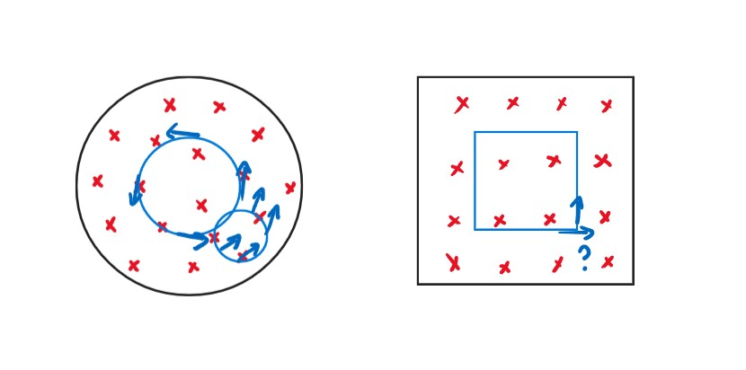

Chapter34 The Faraday’s Law of Induction 法拉第电磁感应定律
1 法拉第电磁感应定律
$\varepsilon=-\frac{d\varPhi_B}{dt}$
负号的含义： 阻碍磁通量的变化
2 楞次定律 Lenz's Law
感应电流的产生的磁场总要阻碍引起感应电流的磁通量的变化
本质是能量守恒：在克服阻碍的过程中，其他形式能转化为电能
3 动生电动势 Motional emf

$\varepsilon=\int(\vec{v}\times\vec{B})\cdot d\vec{l}$
推导： 洛伦兹力$F_L=e(\vec{v}\times\vec{B})$ 若建立电场且达到平衡： $eE=e(\vec{v}\times\vec{B})$ $E=\vec{v}\times\vec{B}$ $\varepsilon=\int(\vec{v}\times\vec{B})\cdot d\vec{l}$
高中时的默认情况：$\varepsilon=BVl$
例：求金属棒两端电势$\varepsilon$. 法一：积分 $d\varepsilon=(\vec{v}\times\vec{B})\cdot d\vec{r}=-Bvdr$ $\varepsilon=-\int_0^RBvdr=-\int_0^RB\omega rdr=-\frac{1}{2}B\omega R^2$ 法二：法拉第电磁感应定律 考虑扇形区域$oab$ $\varPhi_B=BA=B(\frac{1}{2}R^2\theta)$ $\varepsilon=-\frac{d\varPhi_B}{dt}=-\frac{1}{2}BR^2\frac{d\theta}{dt}=-\frac{1}{2}B\omega R^2$
发电机和电动机（Generators and Motors）:

$\varPhi_B=\vec{B}\cdot\vec{A}=BA\cos\theta=BA\cos\omega t$
$\varepsilon=-\frac{d\varPhi_B}{dt}=BA\omega\sin\omega t$
4 感生电动势 Induced emf
由法拉第电磁感应定律：
$\varepsilon=-\frac{d\varPhi_B}{dt}=-A\frac{dB}{dt}$
由做功的定义：
$W=\varepsilon q_0$，$Fs=q_0E_{induced}\cdot 2\pi R$，$W=Fs$
$\varepsilon=\oint\vec{E}_{induced}\cdot d\vec{l}$
因此：
$\oint\vec{E}_{induced}\cdot d\vec{l}=-\frac{d\varPhi_B}{dt}$
从更广的角度来看电场的环路定律：
$\vec{E}=\vec{E}{sta}+\vec{E}{ind}$
$\oint\vec{E}\cdot d\vec{l}=\oint(\vec{E}{sta}+\vec{E}{ind})\cdot d\vec{l}=0+(-\frac{d\varPhi_B}{dt})=-\frac{d\varPhi_B}{dt}$
感应电场的产生不依赖于真实回路或电线的存在，会依赖真实回路或电线的只有感应电流

如左图所示，如果大圆范围内的$B$均匀增加，则与大圆同圆心的圆上的$E_{induced}$方向沿圆的切线方向，不与大圆同圆心的圆则不然
如右图所示，方形磁场是不存在的，因为其顶角的$E$方向无法判断